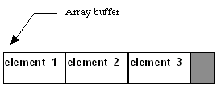

|
| |
This can be either an RArray<class T> or a CArrayFixFlat<class T> object.
In both arrays, all elements:
have the same length.
are physically contiguous within a flat array buffer. The length of an element is the size of the template class.
A flat buffer always occupies a single cell allocated from the heap and is always extended by the process of re-allocation.
The following diagram illustrates how elements are organised within the array buffer:

This kind of array is suitable for a small number of elements or for a moderately large but fixed maximum number of elements. It is not suitable for large arrays with a high turnover of elements.
The RArray<class T> array has the simpler and more efficient implementation but the length of an element is limited to 640 bytes. This array can also be constructed on te program stack.
The CArrayFixFlat<class T> array is more general and is allocated on the heap. This class is immediately derived from the abstract templated base class CArrayFix<class T> which is itself derived from the abstract non-templated base class CArrayFixBase. Its array buffer is implemented using a CBufFlat object.
Copyright ©2002 Symbian Ltd. 6.1-00174 |
|